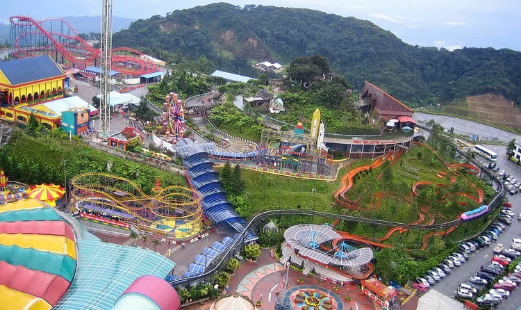
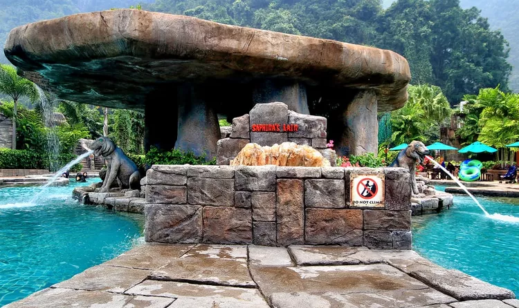
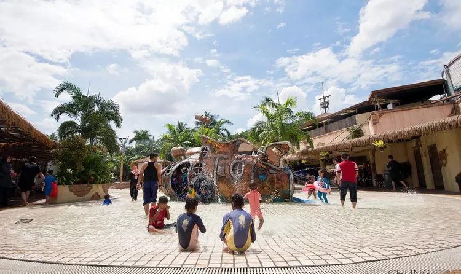

WELCOME TO THEME PARK IS LOVE
INTERESTING THEMEPARK IN MALAYSIA
Legoland Malaysia
 >
>Highlights – Everything that you touch here, gives you a hands-on experience. You will be able to push, create, dismantle or assemble just anything that you see. There is a Water Park, Wave Pool, Joker Soaker and Build-A-Raft here.
Location – Johor Bahru. Activities – Miniland (Landmarks of Asia created out of Lego bricks), Beginning (huge selection of Lego Toys), Ride through Lego Kingdoms with an interesting roller coaster and a host of indoor activities.
Sunway Lagoon
 >
>Highlights – There are over 80 attractions in this theme park, which is set up at a sprawling area of 88 acres. Park is divided into five areas based on adventure experience – Water Park, Amusement Park, Wildlife Park, Extreme Park and Scream Park.
Location Petaling Jaya, about 15km southwest of the capital city of Kuala Lumpur.
Genting highland Themepark
>
Highlights – This is the world’s first indoor theme park and houses the Ripley’s Believe it or not Museum and Haunted Adventure parks inside, sending shrills across the spines of tourists coming here. Rides are clearly classified as family and kids’ rides, thereby ensuring the safety of kids.
Location– Pahang, Malaysia.
Lost World Of Tambun
>
Highlights – The resort cum theme park has six distinct areas of unlimited fun and adventure namely Water Park, Amusement Park, Petting Zoo, Tiger Valley, Tin Valley, Adventure Park.
Location– Sunway City Ipoh, Perak Darul Ridzuan, Malaysia.
Wet World Shah Alam Waterpark
>
Highlights– During 2011, this park was bestowed with awards like “Best Small Water Park” and “First Green Water Park”. Apart from providing various exciting rides to tourists, this park also arranges for hosting private and corporate functions as the hospitality and food at this place is excellent.
Location–Shah Alam, Selangor.